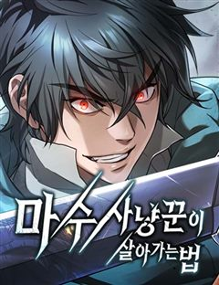
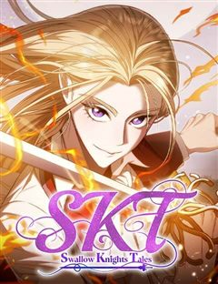
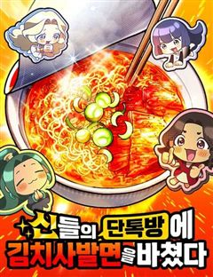
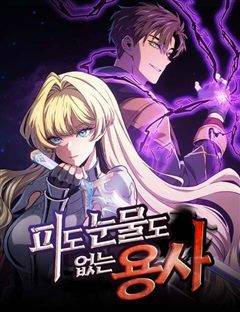
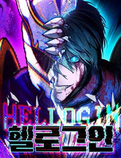

저 그런 인재 아닙니다 같은 웹툰 추천

저 그런 인재 아닙니다 · 에몽 / 희진 / 덴피
저 그런 인재 아닙니다 재밌게 봤다면 이 웹툰들도 좋아할 거예요. 같은 장르이면서 다크히어로, 세계관, 이세계 같은 요소가 겹치는 작품을, 겹치는 요소가 많은 순서로 20개 골랐어요.
2026-10-03 기준 · 네이버웹툰·카카오웹툰·레진코믹스 · 성인 작품 제외
내 취향으로 직접 골라 추천받기 →-
1
 네이버웹툰
네이버웹툰멸망 이후의 세계
<전지적 독자 시점> 싱숑 작가 원작. 이것은 모두가 과거로 돌아갈 때 마지막까지 회귀하지 않았던 한 사나이의 이야기다.
세계관이세계판타지네이버웹툰에서 보기 → · 멸망 이후의 세계 같은 웹툰 → -
2
 네이버웹툰
네이버웹툰풍작이에요, 마왕님!
게임 속 최종보스 마왕이 되었다. 그런데... 이대로 인간계를 침공하면? 내가 키운 만렙 주인공에게 사망. 그렇다고 침공을 중단하면? 굶주린 수하 마족 사천왕에게 사망. ...그러므로, 답은 농사다.
세계관이세계판타지네이버웹툰에서 보기 → -
3
 네이버웹툰
네이버웹툰가공낙원
남다른 직감을 가진 고등학생 산호는, 어느 날 자신에게만 보이는 괴물들의 싸움에 휘말려 죽을 위기에 처한다. 죽다 살아나 눈을 뜬 장소는 인간을 애완동물로 키우는 괴물들의 세상. 졸지에 괴물의 애완인간이 된 산호는 어떻게든 탈출해 집으로 돌아가고자…
세계관이세계판타지네이버웹툰에서 보기 → -
4

네이버웹툰마수 사냥꾼이 살아가는 법
12년 동안 정체 모를 악몽으로 인해 고통 받던 우진은 갑작스러운 죽음을 맞이하게 되는데... 그가 눈을 뜬 곳은 다름 아닌 악몽 속 세상, '마경'. 그동안 갈고 닦은 실력으로 마수를 사냥하며 강해지는 우진은 마수 사냥꾼으로서 새로운 삶을 살아가기…
세계관이세계판타지네이버웹툰에서 보기 → -
5

네이버웹툰S.K.T(Swallow Knights Tales)
최고의 호스트였던 엔디미온 키리안. 꼬마였을 적 우연히 만났던 기사단장이 쥐여준 추천장을 믿고 기사가 되고 싶다는 일념 하나로 상경해 기사단 '스왈로우 나이츠'에 입단한다. 하지만 막상 들어간 기사단은 다른 기사단과 어딘가 달랐는데… 기사가 된 전직…
세계관이세계판타지네이버웹툰에서 보기 → -
6

네이버웹툰신들의 단톡방에 김치사발면을 바쳤다
갑자기 열린 탑의 시대. 밥차로 근근이 먹고살던 '강지헌'은 열린채팅방에서 우연히 만난 차원 너머의 신들에게 ‘김치사발면’을 바치게 된다. 세상에 이런 맛이?! 처음 경험하는 자극에 사로잡힌 신들의 더 맛있는 공물을 위한 선물 공세! 각성한 ‘꿀맛밥…
세계관이세계판타지네이버웹툰에서 보기 → -
7
 네이버웹툰
네이버웹툰디펜스 게임의 폭군이 되었다
타워디펜스&던전오펜스 RPG <제국을 지켜라> 누구도 클리어하지 못한 난이도로 게임의 엔딩을 봤다. 그런데 정신을 차리니 게임 속이다. 그것도 공략이 불가능한 튜토리얼 스테이지다. "반드시 클리어해 주마, 이 거지 같은 게임……!"
다크히어로판타지네이버웹툰에서 보기 → -
8

네이버웹툰피도 눈물도 없는 용사
전세계적인 인기를 누리는 게임 '인류의 수호자'의 썩은물 한제우. 수억의 빚더미와 골방 안에서 허우적대는 이른바 외골수 플레이어다. 하지만 고대하던 마왕과의 최종전은 어처구니없이 실패. 불어난 빚의 상환일은 쉴세없이 다가오며 그를 위협하고.. 절망과…
다크히어로판타지네이버웹툰에서 보기 → -
9

네이버웹툰헬 로그인
한아람의 어릴 적 유일한 도피처였던 게임 '라스트 에덴' 아람은 자신과 닮은 NPC 이브와 함께 랭킹 1위에 오르지만, 게임 서비스 종료와 함께 모든 것을 잃는다. 현실과 게임의 경계가 무너지길 바라던 그의 앞에 이브가 나타나 두 세계를 하나로 만들…
다크히어로판타지네이버웹툰에서 보기 → -
10
 네이버웹툰
네이버웹툰화산귀환
대 화산파 13대 제자.천하삼대검수 매화검존 청명. 천하를 혼란에 빠뜨린 고금제일마 천마의 목을 치고 십만대산의 정상에서 영면. 백 년의 시간을 뛰어넘어 아이의 몸으로 다시 살아나다. ......뭐? 화산이 망해? 이게 뭔 개소리야!?
세계관이세계판타지네이버웹툰에서 보기 → · 화산귀환 같은 웹툰 → -
11

-
12
 네이버웹툰
네이버웹툰전지적 독자 시점
'이건 내가 아는 그 전개다' 한순간에 세계가 멸망하고, 새로운 세상이 펼쳐졌다. 오직 나만이 완주했던 소설 세계에서 평범했던 독자의 새로운 삶이 시작된다.
세계관판타지네이버웹툰에서 보기 → · 전지적 독자 시점 같은 웹툰 → -
13
 네이버웹툰
네이버웹툰호랑이형님
신비한 힘을 가진 아이를 이용하여 세상을 지배하려는 반인반수 흰눈썹! 그리고 얼떨결에 아이의 보호자가 된 괴물호랑이 빠르와 착호갑사 지망생 가우리! 이제 힘을 합쳐 흰눈썹으로부터 아이와 세상을 지켜라!!!
세계관판타지네이버웹툰에서 보기 → · 호랑이형님 같은 웹툰 → -
14
 네이버웹툰
네이버웹툰내가 키운 S급들
F급 헌터. 그것도 잘나가는 S급 동생 발목이나 잡는 쓸모없고 찌질한 F급 형. 개판된 인생 대충 살다가 결국 동생 목숨까지 잡아먹고 회귀한 내게 주어진 칭호, '완벽한 양육자'. 그래, 이번에는 나대지 말고 얌전히 잘난놈들 뒷바라지나 해 주자. 라…
세계관판타지네이버웹툰에서 보기 → · 내가 키운 S급들 같은 웹툰 → -
15
 네이버웹툰
네이버웹툰작두
미신따윈 믿지않는 주인공 '권용진'. 그의 만 16세의 생일이 지나자 눈 앞에 펼쳐진 믿을 수 없는 일들.
세계관판타지네이버웹툰에서 보기 → · 작두 같은 웹툰 → -
16
 네이버웹툰
네이버웹툰쿠베라
신의 이름을 가진 소녀 쿠베라 리즈. 15세 생일에 외출에서 돌아오다가 초토화되어버린 마을을 목격하게 되는데..! 신, 수라, 마법사들 사이에서 펼쳐지는 소속불명 장르 혼합 판타지.
세계관판타지네이버웹툰에서 보기 → · 쿠베라 같은 웹툰 → -
17
 네이버웹툰
네이버웹툰모닥불 친구들
어느 날 추억의 애니메이션 '모닥불 친구들' 세상으로 쏙 들어가 버린 회사원 채수! 평화로운 숲속에서 귀여운 동물 친구들과 놀며 잃어버린 동심을 되찾아가는데.. 사실 그들의 친절에는 섬뜩한 비밀이 숨겨져 있다!? 귀엽지만 오싹한 동심 가득 판타지 호…
세계관이세계판타지네이버웹툰에서 보기 → -
18

-
19
 네이버웹툰
네이버웹툰나이트런
우주력 430년. 성간이동이 가능해져 별과 별을 이동하는 시대 인간은 괴수와 싸우고 있다. 기사와 함께.광활한 우주를 배경으로 판타지 SF가 다가온다.
세계관판타지네이버웹툰에서 보기 → -
20
 네이버웹툰
네이버웹툰사시미 한 자루로 아카데미를 씹어먹음
‘베면 잘릴 것입니다.’ 전국 최고의 칼잡이라고 불리던 내가 과금 몇 번 해본 모바일 게임에 떨어졌다. 무려 '검신(劍神)의 가호'를 부여받고⋯! 그런데⋯ 사용할 수 있는 무장이 고작 사시미뿐이라고? 하루에 단 1분. 나는 사시미로 검성이 된다.
세계관판타지네이버웹툰에서 보기 →